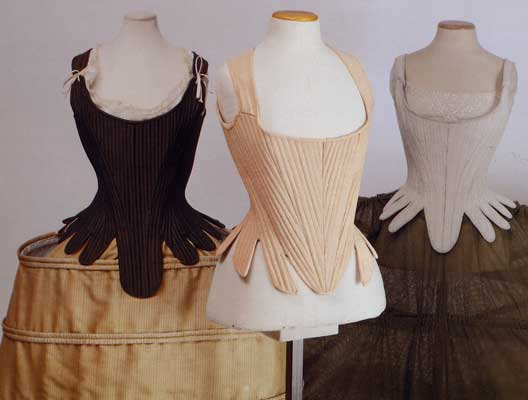
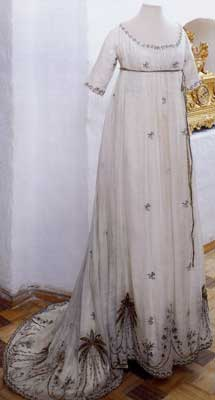
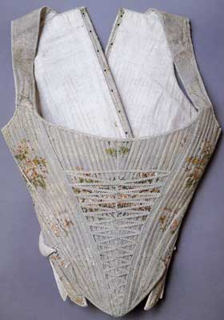
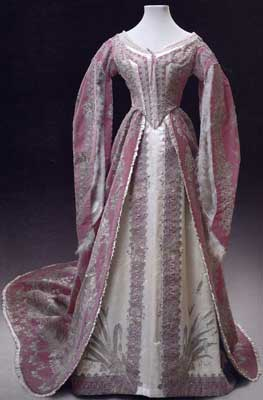
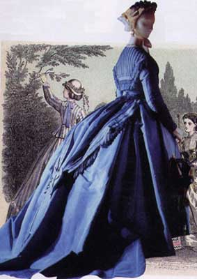
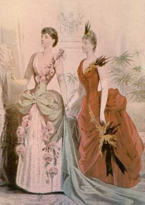
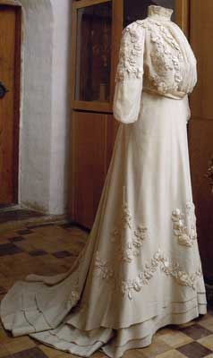
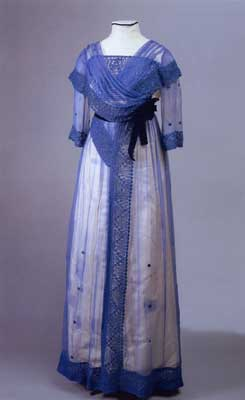
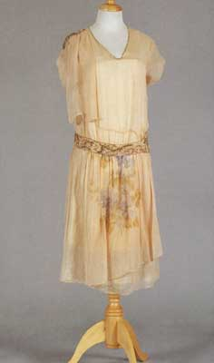
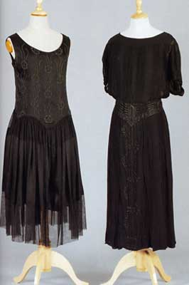

|
Корсет
в России
|
|
| Начало XVIII столетия - переломный этап в истории России. Принятый повсеместно в Западной Европе городской костюм в России был введен указами Петра I в 1700-х годах. Эти преобразования совпали с господством в Европе французской моды. | |
 |
Корсеты-корсажи 1730
- 1740-х годов состояли
из двух частей: спинки, соединенной на плечах
с помощью тесемок, и переда, имеющего на талии
острый мыс. Корсеты были жесткой формы - за счет вшитых в него тростниковых прутьев, уложенных в ряды. Задняя часть корсетов повторяла естественный изгиб спины. Делались они на подкладке из плотных тканей. Корсеты из китового уса имели более гибкую форму, чем тростниковые. Корсеты имели спереди большое овальное декольте, широкие проймы. Корсеты-корсажи надевали поверх дневной льняной рубашки, под платье с рукавами. Они плотно охватывали фигуру, а вшитые в них косточки из китового уса не позволяли фигуре сгибаться и придавали ей горделивую осанку. |
| Корсет в России. Середина XVIII в. | |
 |
В 1780-е годы намечается стремление
к упрощению силуэта женского платья, постепенный
отказ от громоздких фижм, им на смену приходит валик из конского волоса,
прикрепляемый сзади на талии. |
 |
| Костюм 1790 г. Ампир. | Корсет. 1750-1760 г. |
 |
В
конце 1820-х годов модный силуэт женского
платья претерпевает изменения: линия талии снижается
(=>) и постепенно возвращается
на свое естественное место. |
|
|
Костюм
1860-е г. Придворное платье. Принадлежало княгине Марии Федоровне.
|
Костюм 1840 г. |
|
 |
В
1870-х годах пышные и широкие юбки
с кринолинами сменяются юбками, заднее полотнище которых причудливо драпируется
на тюрнюре (<=).
|
 |
| Гравюра из журнала мод. 1868 г. Частное собрание. | Гравюра из журнала мод. 1888г.Частное собрание. | |
|
 |
В
1890-х годах женский костюм делается более строгим и деловым, турнюр постепенно
выходит из моды, хотя торс по-прежнему затягивают узким корсетом. |
 |
|
Костюм
1902-1905 г. Москва, мастерская Н.П. Ламановой
|
Костюм 1910 г. | |
|
 |
В первом десятилетии XX века на форме
и силуэте женского костюма сказывается влияние стиля
модерн, сложившегося в архитектуре на рубеже веков.
|
 |
| Платье. Конец 1920-х г. | Платья. Около 1920 г. | |
|
Вопросы
для самопроверки
|
||
| 1.
Какие изменения произошли в костюме в начале XVIII века? 2. Какие события в мире отразились на модных тенденциях в конце XVIII - начале XIX века? 3. Какие изменения происходят в костюме к концу 1820 года? 4. Какой новый силуэт вошел в моду в 1870 -х годах? 5. Как назывался напуск на платье спереди на рубеже XIX - XX веков? 6. Какой новый стиль вошел в моду в первом десятилетии XX века? 7. Какие особенности имел корсет в начале XX века? |
||